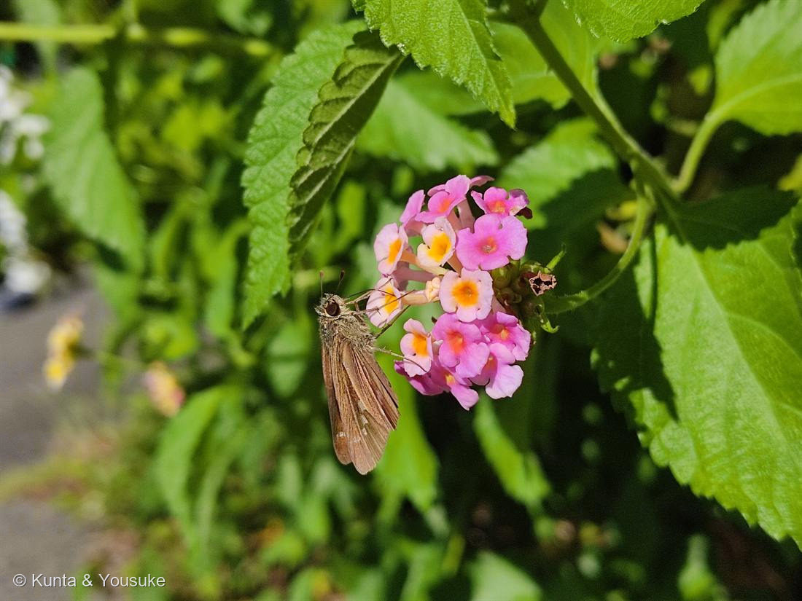

地図を読み込んでいるよ…
🔍 写真も地図も、押しているあいだ拡大して見られるよ（スマホは指を置いてすこし待ってね）。
🌍 の地図＝この子がもともと自生している場所を緑に。熱帯アメリカ。
⚠ 地図は国（日本と中国だけ県・省）までしか塗れないから、ほんとうの分布より広く見えていることがあるよ。地図はだいたいの場所。正確なところは、上の文を見てね。
ランタナ
Lantana camara L.
別名 · シチヘンゲ（七変化）
クマツヅラ科 · Verbenaceae
名前と学名の由来
- Lantana（ランタナ）＝もともとはガマズミの仲間（Viburnum）を指したラテン語の古い植物名。花のかたまりの姿が似ていたことから、この属の名に転用されたと言われる。
- camara（カマラ）＝由来には諸説あり、アーチ・丸天井を意味するギリシャ語「kamára」からとも、現地（熱帯アメリカ）の呼び名からとも言われる。
この植物のこと
- クマツヅラ科の低木。熱帯アメリカ原産。暖かい地域で観賞用に植えられ、こぼれ種などでとても旺盛に茂り、生け垣や花壇からはみ出すほど。暖地では侵略的外来種として問題になることもある。
- 小さな筒状（先が4裂）の花がたくさん集まって、半球〜平らな花のかたまり（散形状の花序）をつくる。
- 色が中心と外側でちがうのが特徴。咲きはじめは中心の若い花が黄色〜オレンジ、外側の古い花はピンク〜赤へと変化していく。この移り変わりから和名「七変化（シチヘンゲ）」。色の組み合わせは品種でさまざま。
- この色変わりは虫へのサインでもある。黄色い花は「咲きたて・蜜あり」、ピンク〜赤は「もう終わり」の合図。虫は黄色い花に集中でき、植物も効率よく受粉できる。
- 葉は対生。卵形で表面がざらつき（しわ状）、ふちに鋸歯。もむと独特の強い香りがする。
- 実は熟すと黒っぽい液果。ただし未熟な実や葉には毒があり、口に入れないよう注意（家畜が中毒した例もある）。
- 蜜を求めて蝶がよく集まる。写真にもセセリチョウの仲間が来ている。
- 這って広がり葉が小さく単色なら、近い別種のコバノランタナ（No.006）。見分けは「立つ・色変わりする＝シチヘンゲ／這う・単色＝コバノランタナ」。